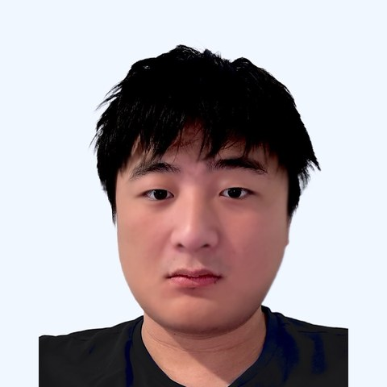

// ai × decompilation
Decompilation you can execute
Using LLMs and agents to recover source code from binaries that can be recompiled and re-executed.
I am a Ph.D. student in Computer Science at Vanderbilt University, advised by Prof. Kevin Leach, starting from Fall 2023. My research interests lie in AI for decompilation and trusted execution environments (TEEs).

// ai × decompilation
Using LLMs and agents to recover source code from binaries that can be recompiled and re-executed.
// tee
Extending Arm TEEs to protect applications from privileged attackers.
One recovers what a program really does. The other makes sure nobody else can find out.